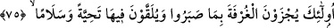

(geçerler);” (el-Furkân, 25/63)
Ey Câbir, “Gecelerini Rablerine secde ederek ve kıyam durarak geçirirler.” (el-
Furkân, 25/64) âyeti, bütün geceyi kıyamda ibâdetle ve teheccüdle geçiren Ebû
Huzeyfe hakkındadır.
“Ve şöyle derler: Rabbimiz! Cehennem azâbını üzerimizden sav…” (el-Furkân,
25/65) âyeti, cehennem korkusundan ve Allah’tan uzak kalmanın ateşinden sürekli
ağlayıp mahzun olan Ebû Zer Gıfârî (r.a.) hakkındadır. Hz. Peygamber (a.s.) ona: “İşte
bu Cebrâil, Allah Teâlâ’nın seni cehennem ateşinden azâd ettiğini haber veriyor.”
buyurmuştur.
“(O kullar), harcadıklarında ne israf ne de cimrilik ederler; ikisi arasında orta
bir yol tutarlar.” (el-Furkân, 25/67) âyeti, Ebû Ubeyde hakkındadır. Malını kendisi ve
akrabaları için infak etti de Allah onun bu davranışından razı oldu.
“Yine onlar ki, Allah ile beraber (tuttukları) başka bir ilâha yalvarmazlar,
Allah’ın haram kıldığı cana haksız yere kıymazlar ve zina etmezler…” (el-Furkân,
25/68) âyeti, Ali b. Ebî Tâlib hakkındadır. O hiçbir zaman puta tapmadı, zina etmedi ve
haksız yere birini öldürmedi.
“(O kullar), yalan yere şahitlik etmezler …” (el-Furkân, 25/72) âyeti, Saîd b. Zeyd
b. Amr b. Nüfeyl (r.a.) hakkındadır. Hattab b. Nüfeyl bir zırh satmıştı, sonra pişman
oldu. Saîd’e: “Sen, bu zırh babamındır, Amr b. Nüfeyl ve Hattab’ın onda hakkı yoktur.”
diye dava et de sana rüşvet vereyim.” dedi. Sa’îd: “Benim, senin rüşvetine ihtiyacım
yok. Yalan söylemek de benim işime gelmez.” dedi. Allah onun bu davranışından razı
oldu.
“Kendilerine Rablerinin âyetleri hatırlatıldığında ise, onlara karşı sağır ve kör
davranmazlar …” (el-Furkân, 25/73) âyeti, Saîd b. Ebî Vakkâs hakkındadır.
“(Ve o kullar): “Rabbimiz! Bize gözümüzü aydınlatacak eşler ve zürriyetler
bağışla ve bizi takvâ sâhiplerine önder kıl!” derler.” (el-Furkân, 25/74) âyeti, Ömer
b. Hattâb (r.a.) hakkındadır.
Allah Teâlâ onları bu sıfatlarla övdü ve Hz. Peygamber (s.a.)’in ahlâkını örnek alan
sahâbenin bu güzel ahlâkını zikretti ve şöyle buyurdu:”
75. İşte onlara, sabretmelerine karşılık cennetin en yüksek makamı verilecek,
orada hürmet ve selâmla karşılanacaklardır.
“İşte onlara” yukarıda açıklanan vasıfları taşımaları ve onları kendilerinde
toplamaları bakımından Rahmân’ın kullarına “sabretmelerine karşılık” tâatlerin
yorgunlukları, şehvetleri terk ve mücâhedelere katlanmak gibi meşakkatlere